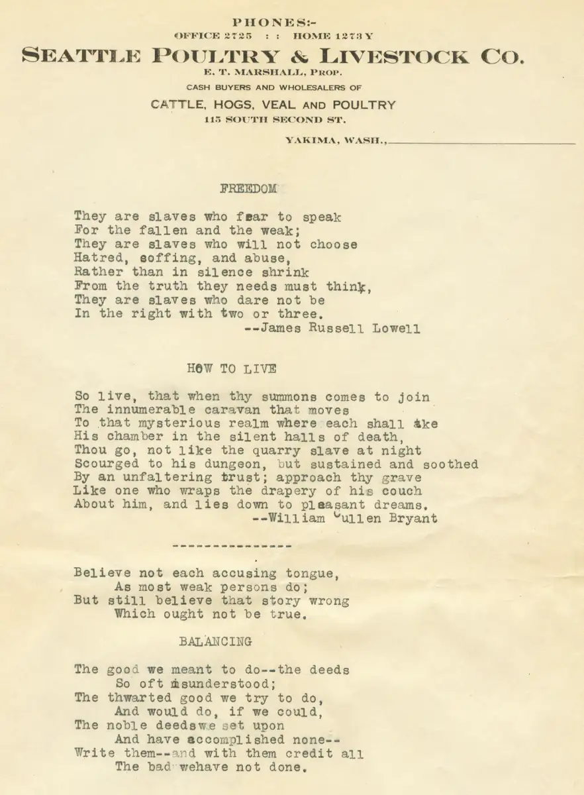

Home / Browns / 001 Brown Documents / brn001-00011
brn001-00011
← Return to 001 Brown Documents
← brn001-00010a Next →
There are about a dozen typed pages of poems, probably typed by Marjorie Lee Marshall. Some are not credited; it is unknown whether Marjorie may have written them or not. We can also see from the letterhead the address of E.T. Marshall's poultry store in Seattle.

Actual size: 7.17" × 9.75" · Scanned at: 150 dpi · 1.57 MP (1075×1463) · Image date: 7 May 2006 · Comment date: 7 May 2006
Copyright © 2005–2026 Thomas Krehbiel. Images are freely distributable for personal use. For more information about these images contact Thomas Krehbiel (tkrehbiel@gmail.com).
Photos were scanned at either 300dpi or 600dpi, depending on the quality of the photograph. Slides were scanned at 1800dpi. Documents were scanned at 100dpi or 150dpi. Photoshop enhancements: most images have had their contrast improved. Some color photos were corrected to restore color balance. Some blurry images were mildly sharpened. Occasionally dust, scratches, and blemishes were removed digitally.
{kind=link}